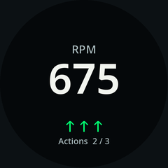

A separate action-page branch, configured in the App. Each page has one purpose, one clear state and one primary control. Gauge readings keep their own page order. Browsing never sends a vehicle command.
240 × 240 gauge designs and App configuration concepts. This is a review, not installed functionality. The existing command qualification and recovery rules still apply.
Read the interaction rules and implementation boundariesSwipe down or tap the top chevron to return to the exact reading page. Pause automatic page cycling inside actions. Keep active controls running independently of navigation, with Stop reachable when you return.
Review decisions: retain the current configured entry count (default three swipes in five seconds); use one named confirmation for consequential Start; Stop has no second confirmation; no automatic exit while an action is running.
This local prototype changes only its example image. It never connects to a vehicle, phone or gauge. Use the buttons, keyboard arrows, or swipe the face. Left/right changes actions; down returns; up enters from readings.
